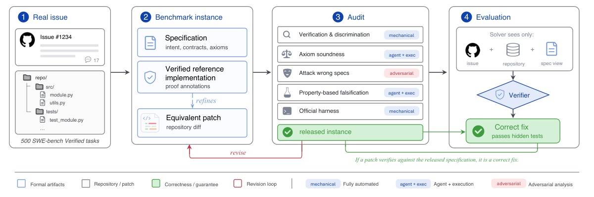

Lean 4 with Mathlib is one of three verification backends, alongside the Lean-embedded Velvet DSL; specs, implementations and agent-written proofs are kernel-checked.
Abstract
Ensuring the correctness of LLM-generated code is a core challenge for modern software engineering. Benchmarks for agentic code generation check correctness with held-out test suites, which are inherently incomplete and increasingly susceptible to memorization. Formal verification avoids both problems, but existing work covers only standalone tasks whose specifications are given as input, not real issues, which touch large repositories and state intent in vague natural language. We present Benchproofer, a pipeline that turns a coding task with a known correct patch into a formally verified one: it writes a specification for the new code, summarizes the existing functions that code calls with axioms, and admits an instance only after mechanical and adversarial gates agree. Applying it to SWE-bench Verified yields SWE-Proof, 500 real issues whose correctness is formally verified rather than tested, and it extends to SWE-bench Pro. Evaluating Claude Opus 4.8, we find that verification catches what tests miss: a quarter of test-passing patches admit counterexamples, which a structured natural-language specification does not fix, while a correct formal one lifts resolution from 85% to 95%. Writing that specification is the hard part: an agent that must write its own gains nothing over an unaided baseline, and only 56% of those specifications pass our audit. The usual failure is faithfulness, a specification that constrains part of the required behavior and leaves the rest free. Specification quality still tracks the outcome, failing on 92% of unresolved instances against 51% of resolved ones, making faithful specification synthesis a concrete open problem.
Problem
Coding-agent benchmarks such as SWE-bench judge correctness with hidden test suites. These tests are incomplete and can be gamed. Existing verified code generation work covers only small standalone tasks with given formal specifications, not real repository issues stated in vague natural language.
Approach
Benchproofer is a pipeline that turns a coding task with a known correct patch into a formally verified instance. For each task it synthesizes a formal specification, axiomatizes the unchanged callee functions, and builds a reference implementation, a pre-fix twin and a proof. Each artifact is admitted only after mechanical gates (verification, discrimination, mutation, hygiene) and adversarial LLM audits pass. Instances are built under three backends: Nagini for Python, Velvet (a Lean-embedded imperative DSL), and pure Lean 4 with Mathlib, where proofs are agent-written and kernel-checked.

Figure 2: The Benchproofer workflow. From a natural language issue description, Benchproofer builds a specification, an implementation, and a verification certificate, and admits each artifact only after it passes a suite of gates that combine mechanical checks with adversarial audits.
Results
SWE-Proof covers all 500 SWE-bench Verified instances plus 266 SWE-bench Pro instances. Evaluating Claude Opus 4.8, about a quarter of test-passing patches admit counterexamples. A correct ground-truth specification lifts resolution from 85% to about 95%, including 95.2% under Lean. Self-written specifications give no gain, and only 56% of them pass the audit.
Backend
Bundles
Mutants
Rejected
Pooled rate
Nagini
664
8,973
8,713
98.01%
Velvet
724
7,847
7,837
99.87%
Lean
745
8,637
8,613
99.72%
Total
2,133
25,457
25,163
99.17%
Mutation testing of reference implementations by backend